我一生的经历 梁洪盘
Table of Contents
1. 序言
公历2023年10月19日至10月20日，余本家大伯之妻吾之伯母逝，余代父赴糯米湾（今山东费县西南）吊丧，因缘下拜见五爷梁氏名洪盘。洪盘生自1935年，年九十有一，三岁学文，笔耕至今。余翻阅其案前笔记，始发掘其手稿《我一生的经历》，盖人生自传尔。吾爷春秋已高，握笔无力，思绪混杂，行文潦草，又不善著文，其行笔多混杂摘录，掺以乡野土话，故传记混乱，有头而无终。其上多删改，多为流畅行笔，修正错误。案前所誊，多为党文历史，若马克思之理论，毛、邓、习之文章报告。吾爷誊抄不辍，文稿竟有七斤之重，唯此自传，为其原创，余感之，恐老人之文稿失散，多年精力若由此毁之，岂不痛哉。故余以手机拍摄其文稿，归家整理，调顺文本，修复别字，又对乡间土话加以注释，以成斯文。
吾爷之文笔颇类稚童，不甚成熟，多有含混不清之处。为供后人考证，余严格记录原文，在其上以小括号修复别字，如“望（往）县城去了”。以中括号添加注释，如“我父亲老【方言讳词，去世的意思。】”。如此种种。
吾爷所叙之事，年代久远，其中关节众说纷纭，此文仅为一家之言，非信史，当年是是非非，余未有考证，读者慎之。
余整理注释此文，非为谋财、谋利、谋名，亦非为网络之辩争，更非为我家族贴金。余整理此文，不过恐老人心血归空。依仆之见，部分一、二、三最有价值，四至七则纠缠恩怨是非，其中真假，难以言明。将来梁氏子孙，求生计之余，若读斯文，当知当年先人何其不易也。
梁了一
2023年10月20日夜 于山东费县 晦云庵
2. 部分一：自述
梁洪盘在朱田供销社退休，男，汉族，古历【即农历】1935年2月22日出生。1937年我就参加了地下党，跟着黄汪头【注：村名】的朱士凡、山固前【注：村名】的王公学开会给他们汇报俺村恶霸地主刘开荣的罪恶，1958年考的工业大学，分配了工作，1992年加入了中国共产党，1997年退休。
我从三岁父母就教我学三字经、百家姓。1939年俺村成立了学校，我就在学校里读四书，1941年日本鬼子就来了在郭家山叉了木寨，日本鬼子和汉奸就在上边【方言，意为上面】。学校就撤了，我在家父亲把他年过的五经四书等等都教给我，叫我有时间就学习，“不会的就问我”【注：引号为笔者加】，还给我说：“你抓紧时间好好学习，你看这个念头再成学校是不可能，从小不好好学习，过上几年自己过日子了想学也没有时间学了。想学也就晚了。”
我就把父母给我讲的要好好学习，我就牢记在脑子里，我下定决心白【天】有一点时间就学习，晚上点着油灯学习、有时睡醒了觉有的字记清了还在肚子上写，每天进行的工（功）课当天都备（背）会。
1943年至1944年俺村成立了洋学，我上了二年的洋学。1948至1956年在本村上民校，初级民校、高级民校都学完。1952年俺村成立了第一个农业团结合作社，我积极报名12户、1935年扩大到32户、1954年扩大到72户、1955年成立了高级农业合作社我都当会计。1957年至1958朱田人民公社成立农中，我把账目交出去，我积极报名去学习，1958年费县召考100名工业大学生，我积极报考，我就考上了工业大学。
1960年在临沂财经干校学会计，1988年12月20日至1989年6月12日在晋升经师专业知识培训班学习经考试成绩合格，准予结业，特发此证。
1963年至1965年在机关党校上高中，还在党校学习政治学。这些年来我学习的决心就是毛主席讲的：“学习有三个字，“一个是“下”，一个是“苦”，一个是“功”，“下苦功”学习。””党员第壹条讲：“认真学习马克思列宁主义、毛泽东思想、邓小平理论、“三个代表”重要思想、科学发展观、习近平新时代中国特色社会主义思想，学习党的路线、方针……【到此为残章一】”
3. 部分二：罪孽深重【注：此章节名为原作者起】
在旧社会，俺村有一家恶霸地主刘开荣他兄弟五个。大的刘开荣、二的刘开棵、三的刘开瑞、四的刘开启、五的刘开方，他的下一倍（辈）就有十几个，还有他本家、门户大，还有一些打手。他开着铺子和当铺，开着酒厂，当着庄长【注：类似于村长】，他仗势欺人，把当票卖出去，再把当票拿回来买东西，就作废了，走慢了就挨打，到他的酒厂挑酒卖的装完酒过完称（秤）、付过钱、挑着酒就走了，刘开荣早就派了两个人扛着枪在庄北桥底下等着挑酒的、挑酒的刚到桥南头，这两人出来把枪一指、把酒搁下、不搁下、就打死你、挑酒的人就老老实实把酒搁下了。挑酒的人借么的弄了点钱就这一下子就没了，叫人家怎么过呀？在那黑暗的旧社会向谁喊冤。
刘开荣在俺糯米湾村出来到大街上一踱（跺）脚，糯米湾两头都乱颤动。
我大祖父家我大伯，往地里推粪经过刘开荣家的那段路，刘开荣派人横（阻）在路上，不叫走，时间上了，我大伯把他拉一边，就把粪推到地里，按大伯回来吃完中午饭，刚出大门，刘开荣早就派了五六个人拿着麻袋把头一抱，按倒就打、活活打死。在那黑暗的旧社会向谁喊冤。
俺村有一家姓魏的兄弟两个，二老魏家穷自己生活没有屋住。在庄外人家的秫楷攒【或为谐音，意“玉米杆”】里睡觉，恶霸地主刘开荣黑天半夜派了六七个人把二老魏从秫楷攒里拉出来活活打死、又拉进秫楷攒里点着火把二老魏烧了，烧的太难看了，在那黑暗的旧社会向谁喊冤。
久太庄西大门老刘家自己的钱不够，又借了一部分钱收了一群猪到滕县【注：在费县北，山东中部，现为县级市滕州市】去卖，刚到俺庄西大路，就叫刘开荣看见了，派着人去把猪全部撵回他家。全部杀完，吃、卖光。叫人家怎么过呀。
俺村姜三叔两天都没吃上饭了，东借两么【注：即两毛，意“借点钱”】的借点钱赶梁邱大集从俺庄到梁邱30多里路买来五斤豆饼，刚下南门，又叫刘开荣看见了，姜三叔刚进大门、刘开荣派的人就赶到了，就在手里夺走了，全家人哭了一大场，刘开荣叫他的帮手把豆饼弄碎喂了骡子马，喂了南瓜。人家买的豆饼是渡命的，旧社会就这样压迫人民和剥削人民，姜三叔过不下去了，领着老婆孩子上了东北，一去没回头。
我父亲在腚上瘴贴骨疽阻了三年，刚好了，拄着拐杖能走了，叫刘开荣看见了，刘开荣派人叫到【注：方言，叫到->叫着】我父亲上了南庄刘开成家，他们六七个人按头的按头，按脚的按脚，按腿的按腿，用我父亲的拄棍把屁股都打乱（烂）了，又瘸了一年。在黑暗的旧社会有苦难言。
1938年，我虚岁五岁，俺村恭火神，在刘宝良家恭的火神，过年了我母亲用本地布印的花布给我做了一件花布大褂子，我穿着花布大褂子看恭火神的，我刚走进大门里，就叫刘开荣的六七个侄子堵住了，你来干什么？我看恭火神的，不叫看，快走，我一愣还没说出话来，他们就把我按倒就打，把我的褂子都给我撕破了，刘保德看见了，把我送出大门外，你再（在）后街回家快走。我回到家看着我父母我就哭了。母亲问我？你哭什么，我：叫老刘家打的。母亲一看褂子都撕乱（烂）了，我母亲趴倒就给天老爷磕头，“天老爷你行行好，您睁开大眼看看俺叫人家打骂受人家欺负，这些罪俺怎么受啊。”我母亲起来抱着我就哭，给我说：“你再出去碰着老刘家那些人他们咀【注：方言，动词，即骂】不干不净的骂，你就装听不着，你就赶紧走，你好好地想着。”
刘开荣看着谁要卖个小牛、小猪的叫他看见了，派人到那里就拿来。弄老百姓的钱一个是挥霍，一个是买枪，就这样把小门小户的钱一次次的把钱弄到了他手，就买了十八支枪。
刘开荣当着庄长外边来要公粮的，要一千斤，他就要两千斤，要公粮的要两千斤，他问户里要肆【通四】千斤，他人家要的走送了，那一半他留下他就蒸酒了。刘开荣他到大街上一踱（跺）脚糯米湾两头都颤抖，他想骂谁就骂谁，想打谁就打谁，想叫谁死就叫谁死。
俺村就这样叫刘开荣折磨的有多少下南湖【注：即去南方】、上东北的，卖孩子的、逃荒要饭的，明明的世界，朗朗乾坤，受人家的折磨，受尽了痛苦。
1938年国民党、地主、富农基础向农民散步共产党、鹰眼钩钩鼻，毛头毛脑，共产共妻，您都不要靠近他，这些国民党、地、富、反、坏，造谣生事，散布流言蜚语，还说：老毛，毛头毛脑。
从1936年至1940年这五年从1936年日本鬼子就来俺庄，我才两生三岁【方言，即两岁三个月】，我父亲在腚上长贴骨疽，长涧沟石屋里，我母亲在那里扶使（服侍）我父亲，俺这几家都上了大湾【注：糯米湾的梁家为大湾的分支】石洞，在石洞里住了五天，在走的时候我母亲给我婶子和我大娘家的我大嫂子说：“他到这没离开过，还吃奶，到晚上睡觉时把他放在中间，他要哭了把奶子搁咀（嘴）里，别叫他哭，上关山再到山东边我走累了给俺哥说把这山搬走不行吗？他们都笑了，你看他能说出这样的话。到晚上睡觉的试侯，我就记住我母亲给婶子和嫂子说的那些话，我就不哭。
在那几年有日本鬼子王洪九、国民党的51军、57军、刘黑七【注：山东地区著名的土匪（响马），后在许家崖的柱子山附近被击毙】、两天三天，越到晚上吃饭的时候，不是这个来，就是那个来，刘洪章小调号一吹赶紧地往石洞里（走），吃饭就不当回事，有的拿两对煎饼对子在绳上挂着，叫苍蝇粪一层就这吃了，又没茶【茶，即烧开过的白水】喝，又没水【水，即生水】喝，就得了急（或为疾）病上呕下泻，有的就死去了。整天提心吊胆，长气短气的喘，人民可受苦了。
费县东边蒋家围大地主死了，把人民的童男童女弄去随葬，用粉（水）银灌死，给地主随葬。
刘黑七是马子【即响马，土匪。类似于“张麻子”的麻子。】头，他老家就是费县西南现在的石井镇，就是马子窝。他想打哪个村庄就带着人马就去打，逮着人不管大人小孩就杀死，能拿的就拿走，北边都打到博山，信教的人听说刘黑七去打博山，都在围墙跟蹒（盘）着腿、头上顶着泥块下土遁。刘黑七带着马子赶到根，一刀一个全部杀死。
刘黑七就生长在费县石井区【石井为乡镇】，石井区就是马子窝。他带领马子打开大泗颜【注：或为大泗堰，鲁南有泗水】，大人逃走的就逃走了，逃不走的就杀死了，几岁的小孩活活的就劈开了，几个月的、一两岁的小孩就在碾【注：碾，一种公共设施，类似石磨。石磨是横向磨，碾则是类似于车轮压碎谷物。】上活活压死。刘黑七就是走到哪，就是杀光、抢光。
4. 部分三：解放前
1937年由吾六区就成立。朱士范的人来俺村攻打刘开荣，他们都跑到东山坡上去了。全庄的老百姓都跑东山坡石屋里去了，来打几次，也没有逮着他。俺村的贾学生找到朱士范联系，先把俺村组织起来，就是秘密地下党组织。人员有贾学生、李洪起、李洪德、刘西勋、刘洪景、姜万存、姜万贞、我二哥梁洪杰、刘宝荣、葛启成、葛启法十一人组成。叫我给他们站岗、放哨，送信，白天他们开会，我就站在围墙岗台上站岗。暗号“来老吆了”。黑夜行动，开会叫我先探好了路他们在（再）走，有时分组，谁在什么地方、哪几个人在什么地方有情况好取得联系。有时山坡石屋里睡觉，有时到猪圈里睡觉，猪虱子爬一身咬的能睡着觉吗。一夜挪好几个窝。有时候吃不上饭，饿着肚子，还的（还得）和这些吃人民的肉、喝人民的血、这些野兽进行斗争，贾学生在由吾区公所领来五支枪、刘开荣也害怕了。
【下段与上章的部分同。】在旧社会有刘黑七、国民党的五十七、五十一、来回的在沂蒙山区，还有当地的二十一支本村的刘开荣等等。还有日本鬼子。这些野兽黑夜来了黑夜跑，白天来了白天跑，整天结跑反，地也种不好，打那点粮食不够这些野兽要的，糠都吃没了。老百姓整年吃糠难菜，春天以来就靠挖野菜、吃树叶，老百姓借点钱，到集上买粮食，买来就吃，买不来就饿着，老百姓有多少逃荒要饭的，有的下南湖，有的上东北，就没有穷人过的。
1938我三个给富农梁士太挑草，在解家峪，每人都按140过秤，其他人挑得动，窝三哥挑不动。压的当时吐了血，在一起干活的都不叫给俺母亲说，也不叫俺三哥给母亲说，给俺母亲说了，怕俺母亲给他们闹，就把这事就压下了。俺三哥这个病就没急（及）时得到治疗，时间长了，病情一天一天加重了，1938年至1940年这二年多的时间，暑天再热整天冻得打哆嗦，也得抱着火盆烤，抬着到梁邱、到城里（即费县城），多次治疗没治着病，最后死在城里。就这样叫人家害死了。
1947年美帝国注意支持了国民党反动派窜犯大陆的时候，这些地、富、反、坏分子，纷纷出笼，投奔国民党，随着国民党回到家乡，这些“还乡团”再埠下街安营扎寨，这些“还乡团”到各村把党员、干部抓到埠下乡治完了、最后就活埋了，挖一个大窖子就埋一二十个人。
我二哥走了，又回来想把我父亲和他一块走，还没来到家就叫俺庄的“还乡团”逮到埠下乡，进行残苦（酷）的折磨，用刺刀浑身都刽掩【方言，即剐严，即全身上下用刺刀剐了个遍，类似于千刀万剐】了，手上的筋、脚上的筋、脚拦骨子的筋都用刺刀割断了。把俺二哥不知治死多少死（次），最后活埋了，白天不敢望（往）家抬，天黑了直接抬到林上【方言，即“陵”，本家坟地】，也不敢弄灯影，刘开荣和他那些狗腿子，往俺的林上打枪，枪声不分呀的响，子弹就在俺身两旁出出的，吓得俺浑身哆嗦，不知往哪里躲，久等还乡团睡了觉，这才把俺二哥埋上。
1947年俺四哥参军，走了半年多信影无有，俺娘整天在家哭，做着饭也哭，走着坐着也哭，饭也吃不下，睡也睡不好，我看着俺娘哭，我也哭，都哭干了眼。
古历5月13日埠下乡还乡团都来俺村把党员、干部这十八家全部活埋。这天晚上新四军从北方来把县城包围了，还乡团都吓跑了，共产党毛主席从火坑里把我们救了出来，给了俺第二次生命。【注：此处因果关系为，作者将被活埋。蒙军来而得救。】感谢共产党、感谢毛主席。我暗暗地想下定决心好好学习，听党和毛主席的话，读一辈子毛主席的书、干一辈子革命，报答党和毛主席的恩情。
新四军古历五月十三日包围费县城，打了七天七夜，老天就下了七天七夜的雨，伤亡太大了，打开费城以后、新四军就住在俺村，重新整顿了七天，我帮他们铡草、喂马，我给班长说：我去当兵行吧？李班长说还小一点，47年我12岁，我年龄小可有劲了，我下地干活挑挑推推都行，李班长你看我铡草有劲吗？他说有劲，叫你去。这七天就铡草、喂马，班长说明天就走，我说再休息两天。来命令了，执行新的任务。第二天吃完早饭我牵着马和他们就走了，刚出去小南门，我母亲在家找不着我，我母亲急忙跑出来，看见我，抱着我就哭，五呀你干吗？【注：方言，五老爷在家排行第五，故叫五，后同】我当兵去，给俺哥报仇。你去吧，你二哥、你三哥都死了。你四哥当兵信影无有，你去吧，我也不活了。【注：如前述，二哥参加共产党，被还乡团折磨，后活埋。三哥干重活得病，不得治而死。四哥参军，解放战争后或因病还，或未还。】 李班长说：大娘你把他领回家吧，我下定决心去当兵没去成，我心里非常难过。
1950年党和毛主席号召时（适）龄青年报名服役，我积极报名，到县检查站，经过检查后，因我的耳陈，没去成，我是太苦恼了。【注：整理者在拜访该老人时，该老人一直佩戴着整理者姑姑所买的助听器。】
（本残章结束……）
5. 部分四：建设时期
【此部分的开头与前重复，然后则不同。】 1952年俺村就成立了农业合作社，我积极报名，12户办起了农业合作社。1953年发展到32户，1954年发展到72户。1955年发展到222户，我一直到1956年在合作社当会计，社员找我办什么事自己的先不办，先给他们办。1956年竹田区【注：朱田与前石井同，均为乡镇。糯米湾即属于朱田】成立了农中，我给社长提出，我去朱田上学，你再找会计？“你当会计，又上学干么？”【方言，干么->干什么】，我上好了学有了知识好为咱社、为国家多做贡献。第二天找了会计，我就去上学了。
1958年费县下了招生简章，全县召五百学生，工业大学生，我前去报名，参加考试，给我来了录取通知书，叫我到商业局报名，在这个时期正好赶上，苏联修正主义赫鲁晓夫、勃列日涅夫集团打着“社会主义”和“反帝”和“扶持革命”的旗号，推行霸权主义、扩张主义政策，破坏国际共产主义运动和民族解放运动，同美国争夺世界霸权，武装侵略别国，就是对马克思主义基本原理，特别是无产阶级国际主义最恶劣的背判（叛）。
撕毁中国的合同。卡我们的脖子，党中央毛主席提出响亮的口号。自力更生、艰苦奋斗、多快好省地建设社会主义。全国人民行动起来，大办钢铁，支援国家建设。
商业局响应党和毛主席的号召，组织三百多人在南石沟南岑安营扎寨，大炼钢铁。我们这些学员，先筛？，就炼焦炭，炼完焦炭，就到南石沟炼铁。
县委领导分给商业的任务就按时完成任务。商业局领导召开职工大会，领导讲：“苏联修正主义撕毁中国的合同。卡我们的脖子，我们不依靠外援，要自力更生，艰苦奋斗，艰苦奋斗，力争上游，多快好省地建设社会主义。同志们都要下定决心，”淌上几身汗，滚上几身泥，不怕牺牲，排除万难，去争取胜利。同志们从今天晚上开始又放第二颗卫星三天三夜不睡觉，坚决完成党和领导交给我们的光荣任务。炼铁工作结束后，把学员们分到各个厂，又针织厂、化工厂、加工厂等等，我分到针织厂，会到场，县委组织工作队到各区帮忙工作，厂长叫我到县委工作队，领导分配我到山阳区，区领导叫我到城投、黄泥庄等等几个大队，五天的时间完成工作。
县委又通知我到薛庄，七天的时间做完工作，领导又叫我去店子区，又到了四个大队，一个星期时间完成工作。县委领导通知我回县，我给领导把工作情况汇报后，又叫我到马庄、石井区摸摸底，在马庄两天，石井区两天，主要了解群众的生活情况。我到石井一看，在南门围墙根就有十多个年龄在五六岁都吃的杨槐【即洋槐】、家槐叶子，脸都肿得睁（铮）亮，眼都看不见人，阻那里一动也不动，当时我就掉了眼泪。我回到县里给领导汇报这些情况，县领导研究，通知这两个区委先把这些人的生活安排好。
俺厂安排好了，正要试投产。厂领导要求我回厂工作，厂里召开职工大会公布分工名单，叫我负责下酒车间，三个厂一二百人，安（按）班、排、连编制，行动军式（事）化，早晨跑步，星期一二三学习政治，星期二四六学习业务，星期天有时商业局召开职工大会，局、厂不开会放假看电影。
商业局领导在职工大会上讲：”同志们，学员们要好好学习文化，学习业务、作好工作、给国家添砖添瓦，要为国家多做工作，多做贡献，一个人要做三至四个人的工作，领导叫干什么就干什么，不要和领导讲价钱，咱县各个行业吃的是咱商业，没有咱商业，就像朝廷断了血脉一样。工作望高处比，生活望地处比，北京挖大粪的还是劳动模范。领导讲的话正好讲我的心眼里，我参加工作的目的就是这样的，我把领导讲的话，记在心里，写在纸上，贴在墙上，装在我的脑子里。
学习党的方针、政策、路线，学习“老三篇”，雷锋、王杰、焦裕禄先进事迹，就是最好的榜样。自己应该像他们那样，把全心全意为人民服务当作最大的享受，最大的幸福。武装了我的头脑，领导叫同志们多次写决心书，开展比、学、赶、帮、超、一帮一、一对红、又红又专，活学活用毛主席著作。在用字上狠下功夫。一个星期开一次小组会，斗私批修，个人先检讨，同志们再帮助，都争先恐后，积极发言，领导讲：“虚心使人进步，骄傲使人落后，”我们应当永远记住这个真理。还讲：“一个人做点好事并不难，难的是一辈子做好事，不做坏事。”有时过年过节，“开忆苦会，吃忆苦饭。”我就想起过去的苦，眼泪不住的往下流，我暗暗地下定决心，全心全意为人民服务。一生的道路还很长，活一辈子，就要革命一辈子、改造一辈子，活学活用毛主席著作一辈子。靠毛泽东思想，一辈子走革命道路。
领导讲：“要做无名英雄”我四点就起床，慢慢地穿好衣服，悄悄走出去，打扫卫生，还不敢使劲扫，怕惊醒了同志们，打扫完院内卫生，又把车间卫生打扫好，把著毛巾的井键的水打足，？炭拿来，把火点灼（着），同志们才起床，有的同志四点起床，打扫卫生等等。我3点就起床，打扫卫生，整理车间，我又想头晚上先把井？的水打足，把？炭拿好，把车间整理好，第二天早晨点灼火就行了。
轮机车间发生多次轮长现象，造成浪费，闵凡荣老师叫我去帮助轮机。我想标尺有问题。开始轮机，我眼就看着标尺，咀（嘴）就竖着数，拧一圈拔一个呀（牙），拧着拧着标尺那个呀就没把过去，我就立急（即）停机，把那呀拔过去，我还是眼看着标尺，又发生了一次标尺的呀（牙）没拔过去，我就立急停车，把那个呀拔过去，我一直到轮完。把称子原下来，没有出现长短，原来是木条做的标尺，又轻又不耐磨，我给闵老师提出，拿着这个标尺叫铁匠弄点好刚才打个标尺就行了。
商业局领导讲：“开展技术革新、技术革命、反对浪费、增产节约活动。”我想领导讲的，如何去做，我们要动脑筋，想千方百计贡献自己的力量。我就想起来了，铁医为什么是？炭加水，我就从按这个井？开始作试验，不加水X面都在烟筒抽走了，少为（稍微）粗一点的就漏炉渣去了，都扔掉了，烟筒冒黑烟。轧炭加上水，烟筒冒青烟细面抽不走，又不望（往）炉渣里掉，烧干轧每次用三箱，烧湿轧每次用两箱，每箱有六十斤左右，每天节约轧炭六十余斤。
在浆纱这个工序上改革了挣纱桩和晾纱杆，原先晾纱杆是小杆，有些纱撴不开，造成了浪费，改革后把纱都撴开了。1959年共节约原、材、物、燃料7000余元。我给厂提合理化建议十几条，都被厂领导采纳。局里召开会议我去参加，学习会议内容和精神，为党和国家做好工作。星期天局和厂里不开会，放假看电影我不去，我就在厂里看门，同志们回来讲讲我听听就行了。我想“以厂为家”这是领导经常讲的，我不能不管厂的事，去看电影，看好门，保卫国家财产这是我的责任。同志们都看电影走了，我就把北门观赏，我就在南门口看着，电影放完他们回来喇叭一响，我就把北门敞开站在门外迎接他们回来，每次都是这样。
年终我被评委先进工作者。出席县群英大会，在县礼堂群英大会上，我三次举手要求发言，会后县委政治部陈部长到针织厂两次找我谈话，县委政治部和厂领导商定给我专干的报告就报上去了。
1960年2月临沂地区财经干校开办会计、统计学习班，我在临沂学习期间，对我转干的事，就下了公布令，厂领导给我去信，你的转干县委批下来了，在职工大会上公布了。我学习结业后，回到县、政治部陈部长给我谈话叫我到橡胶厂任会计。厂房未建完，我带着十几个人在城关几个大队【注：即费城镇管辖下的几个村】买木材，到梁邱集买木材，从梁邱水库晕倒许家崖水库里，又抬上大坝外，下了大雨厂长叫我带着十几个职工，拿着耙子，绳子等等，练成木排，他们一个排两个人，我自己一个排，我叫他们在前面走，我压后辙，我到了策马河刚要拐弯，在后边来个浪头，把我顶到浅水沙上去了，把我摔了个仰背礼【方言，或礼，或脸，指背靠地面，极言狼狈】，把我呛得喘不过气来，眼看就要背大水冲走。我使个猛劲翻过身来，抓住木排这才爬上木排来，木排就弄不动了，我怎么推也推不动，这时水就消下去了。策马村来了个人给我说：“头边【方言，之前】掉了一块木头，叫俺庄人抬到河东崖【沿】藏墙根去了，他叫我到他家吃饭？ 我不能去，再来大水把木排冲走了，我还得看着那块木材。你回家吧，天快黑了。他回家给我煎的鸡蛋、拿来三个煎饼、提一壶茶【方言，即开水】。我吃了饭，这时天就黑了，你走吧天都黑了，我就在木排上蹲一会，站一会，我在木排上呆（待）了一整夜。梁邱又下了大雨，河里的又长（涨）上来了。厂长带领几个人找寻桃花堰，也没找到我，厂长说：梁洪盘真冲走了。 梁邱又下了大雨，河里的又长（涨）上来了，木排自动地就漂起来了，我奋力地来到城东河靠上堰（沿），我回到厂吃完中午饭带着人把木材抬回来。保卫了国家财产没受损失。
在城关往厂里抬木材，运砖石块，加工大铁罐和其他设备等等。【国家】出了这么些人力、原材物料，厂刚建完，没有原料生产，就下马了，同志们分到各单位，组织部叫我到酒厂任会计。橡胶厂的账全部查完交清。
6. 部分五：建设时期 二
1961年到酒厂任会计、统计、记账员、出纳员，就我一人干，国家没有原料给酒厂，外地也没原料进不来。以酒换料、开展业务，本县的、外县的、挑着的、推着的，各种粮食、谷糠、高粱糠、地瓜把子、茅草根等等，就这样保住工业和群众用酒。
夜晚下两三点钟换酒的，从大门到东河崖【通沿，即河边的意思】。东西大街挨的满满的。从天明大门一开，满院都是人，挨号排队，就开始过秤，到天黑也得把今天这些过完。酒厂就像会场，打点饭都过不来、过不去，把碗都举头顶，天天如事（是）。吃完晚饭就七八点了，这才开始处理账务，每晚电灯亮一会就没电了，就点了罩子灯，每晚到12点左右才睡觉，群众给费县起了个名子（字）：“费县有三松，大马路跳舞厅、电灯底下轧油灯、汽车不走加人拥。”达到日清月结，加班加点，一年没请假，领导讲：“为国家、为人民多做贡献。”
在（19）61年这个时期全县人民生活是很困难的，有一部分群众几天没吃饭了，县委领导找齐厂长，把酒厂的粮食拿出点来，救济这些吃不上的困难户，齐厂长给我讲了情况，我给齐厂长说：“这时人命关天的事，救人命要紧，情缘咱停产也得把粮食拿出。”酒厂贡献咱县壹万五千斤粮食，上交国税20多万，交利润30多万元。
1962年厂领导叫我到组织部报道，领导给我讲：你到店子【地名】供销社报道任会计。我走后就把我管理的账目全部查完，也没找出一分钱的差错。
到店子供销社做会计、记账员、出纳员、兼伙食账，一年请了二次假，这是我家属生头孩，送米汤【费县习俗】那天才回家，第二次就回去。第二次父亲老【讳语，即去世。】，我回家过了五天，我在店子供销社担负这些工作，也是晚上十点以前没睡过觉。
1963年撤小乡、并大乡，店子供销社撤后，叫我到县社杂品经理部，担任保管员，记账，叫我出差采购，叫什么就干什么，没讲过价钱，没说个不字，店子供销社朱会芝主任也来杂品经理部任经理，在店子供销社伙房短款60元他说我贪污了，在店子供销社我给他汇报，炊事员吃饭时他收现金，他买的白连（鲢）鱼他葬在桌子洞里，不见吃就没了，这是什么问题。他偏听偏信，做事不公平正义。
1965年撤销三级站合并二级站，把我分到平邑【临沂的一个县城，在费县西边】二级站，住费县办事组，1966年又恢复三级站，我在生产资料经理保管员、业务员、记账员、管建修、会计请假到月底搞月结，搞大类核算，都得我干。这就是领导讲的，叫干什么，就干什么，别人出差不管时间长短，回单位结算完出发费，就回家休息，我出差时间长短回单位，结完出差费还得？单位的，把账记完，整理仓库，有些商品没整完，又得出差，事情还没办完，又给我来电话，兖州【山东中西部的一个县，古兖州地界】又来几火车化肥，找车往家转化肥，我就提前一天赶到，卸车时化肥袋子摔破了，化肥都撒一站台跟，先把好的装好，底子有图的各装一袋子，慢慢地扫起来，不能叫国家财产受到损失。
我从1963年至1976年这十四年回家过了两个年，下午3点钟走，到家吃完饭，五点就回到本单位，我就想起领导讲的，人民解放军在前防（方）保卫国家、保卫边疆，我们在后防（方）保卫国家财产，同样重要。这是革命的分工，各有各的任务，解放军扛着枪，我们也扛着枪，共产党把国民党主力部队打跑了，还有地、富、反、坏、残渣余业（孽），还有暗藏着不拿枪的阶级敌人，还兴风作浪，看着我们供销社是块肥肉，想着我们的财产。专社下通告：“某某供销社门头【门头，即店门，店面】被盗，某某门市部被盗。”领导召开职工大会学了专社下的通告，我暗暗地下定决心，提高警惕性，把党和领导交给我们的这些国家财产一定要保护好，不能叫国家财产受损失。
我这十几年来，为了干好工作，看好门，站好岗，加班加点，方便让给别人， 各供销社来提货的运输（我）叫他们早点回去，我中午没有休息过，每天发生的账务，白天没时间记账，都是晚上处理账务，十点前没睡过觉，夜晚还起两三回，围着仓库看看弄点动惊（静），叫外边听听，还有站岗的。
1975年搞文化大革命，我有男女关系，进了学习班，把我的账和建修的账全部查完，也没找出一分钱的差错。
1976年叫我到朱田供销社业务员，后来又叫我管仓库，还跑业务，还管业务帐，就是领导讲的，叫干什么就干么，老老实实干好工作。天明起床就上班，每天十几个排车【一种人力推车】，有上县的，有往门市部送货的，晚上八九点钟还收不完货，这一天的进出货单，打好验收单记好账都到十点以后，天天黑白的就这样干，供【疑为“光”，方言，意为仅仅】衣服每年交长款十几万元。
我从小在家父母就教育我别人给你东西你不要，不吃人家的东西，人家的东西也不能拿，人家的就是人家的，咱的就是咱的，你记住了吗？记住了！我给俺大伯和俺婶子家干活我都不在他家吃饭。从66年到97年在外出差看见街上有吃不上的困难户，我就给他们钱。
1958年参加工作，领导局领导讲：“同志们要好好学习，干好工作，不要挖社会主义墙角，不要多吃多沾，要给国家添砖添瓦。我是长记在心上，只想干好工作，领导叫我到门头帮忙，大集顾客围得像蜂子皮样【蜂子，即蜜蜂】，我能偷钱？再说门头没人看门，叫我去看门我能偷钱吗？领导和父母反复教育我，对不住党，对不住人民，对不住父母，亏心的事我不干。
我从1952年在家农业合作社当会计，我是公公道道地公平正义地办公，这五年为社员一笔账没错过。1958年参加工作当了这些年的会计，帐都查过了一分钱的错没查出来。 【本部分结束，整理者标注。】
7. 部分六：一件事情
【整理者在阅读这一部分时有点疑惑。】
1994年，我在城里进货，正建设新华书店，我在书店门口饭场吃饭，又过去一个吃饭的，他就问我你是哪里？我是朱田供销社的，你来干么的？我来提货的，我问他你是哪里？你来干什么？他说我是临沂，建设这个楼的，吃完饭我就走了。
第二天中午我又去吃饭，她又去了，又在一个桌吃饭，他说你半个炼铁厂？我问他怎么（个）办法？他说很简单，买个小炼铁炉花三四千块钱就行，我问他你贵姓？我叫张洪亮，他说我还有个事，我问他你还有什么事？他说地区书记表妹妹生个小男孩他不要了，你要吧？我问他要多少钱？他说根据人家多少钱，你看着办吧。我考虑给二孙子吧，他说我上车站等你，你快来。我找大孙子把这情况说完，大孙子说叫俺姐去吧，我和孙女就到东站，找着张洪亮区买票，我掏出钱来买三个人的票，到零一的，张洪亮说不是上临沂的，上枣庄【山东的一个地级市，在临沂西北方向，毗邻费县】的，你不是说上临沂吗？怎又上枣庄，我就打了一个愣，我想天也不早了就不想去。我又考虑抱着小孩就行，我就把车票买到枣庄的，到了枣庄，下来车，出了车站西门，大路西边有个大商店，他说咱得给小孩买身衣裳？买去吧，一共花了六七十块钱，我就放下心了。这回可是真的了，他领着俺顺着街往北走，走了有二百（米）来远，他就停下了，往西去个小巷口，他说这就到了，他弄个破帆布提包放下叫我看着，你别去了，去人多了不好，我和她去。孙女就掏出五百块钱给他，我考虑三百五百的钱能抱着小孩了吗？我又逃了五百元钱给他，他和孙女就去了，过了有半个多小时，孙女就回来了，五老爷那个人跑了，我头就蒙了，钱叫人家拿跑了。我心里一阵子难受的味，这时候太阳就快落了，我想：上哪去找？在这里住下还有孙女子【孙女子，即孙女】，家里核挂念【合挂念，意思是都挂念者】，我又想他在那建大楼问问那些工人不就行了吗？我就给孙女说赶紧买票走，走完了没车了。买临沂的车票就走了，到临沂太阳就落了，接着买了费县的车票，到费县天就黑了，我下来车拿着提包，就到那个饭店，我给饭店的老板说，我问老板你知道我和那个一块吃饭的任，他家里事哪里你知道吧？老板说他不知道，我就把张洪亮的提包放下，拉开拉锁一看，里边是一个毛巾、一本书，我也没看是什么书，我就把提包扔饭店去了。第二天我到建大楼那里问工人，您的老板是张洪亮吗？他们说俺这里没有张洪亮。我到临沂找也没有这个人，我在枣庄租了房子，找了两个多月也没找着这五个张洪亮。我跳到黄河洗不清，跳到大海也洗不清，只要逮着这个人就好说了。
【整理者不太理解，这里想洗清什么。】
8. 部分七：建设时期 三
1994年至寿光【山东的一个县，在费县的东北方向】拉葱【费县人吃葱多，且多为大葱，产地包括蒙阴、泗水等不止】，去了四个人，人家叫俺装车，俺没记账，叫人家多记了1200多斤，多付了600多元钱。党和政府教导我们，当老实人，说老实话，办老实事，我没想到他们的心这么坏，反而说我坏。
1976年至1997年这二十多年不怕热、不怕冷、不怕累、不怕苦，领导叫我跑业务，我是牢记党和领导的教导，为党为国家节约一个大头针的精神。这些年不管在哪个单位干我都是这样想的，我在外出差、住旅社，住便宜的，在城市里公共汽车一般不做，有个十里八里的都是步行，为了赶时间坐一次车，吃饭时大多吃清汤面，不能欠公家的账。为了节约，给单位汇报工作打电话很少，打个电报十个二十个字说明情况就行，回到单位整天家【通“间”，语气词】、整年家就黑白的干，朱田街群众喊我供销社的老黄牛。
【本段结束。】
9. 附录一： 笔者补充
以上为笔者所能发掘的全部自述。想是其自传还未完本，我五爷春秋虽高，然身体还算硬朗，想距离百岁还有八九年光景，此际或又能有些更新。
10. 附录二：原本之图片
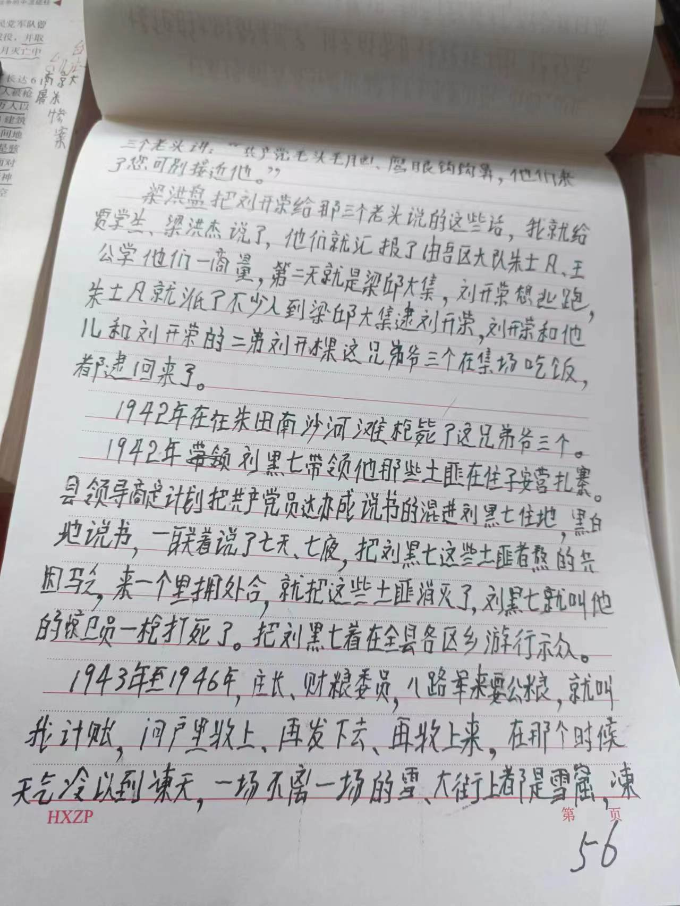

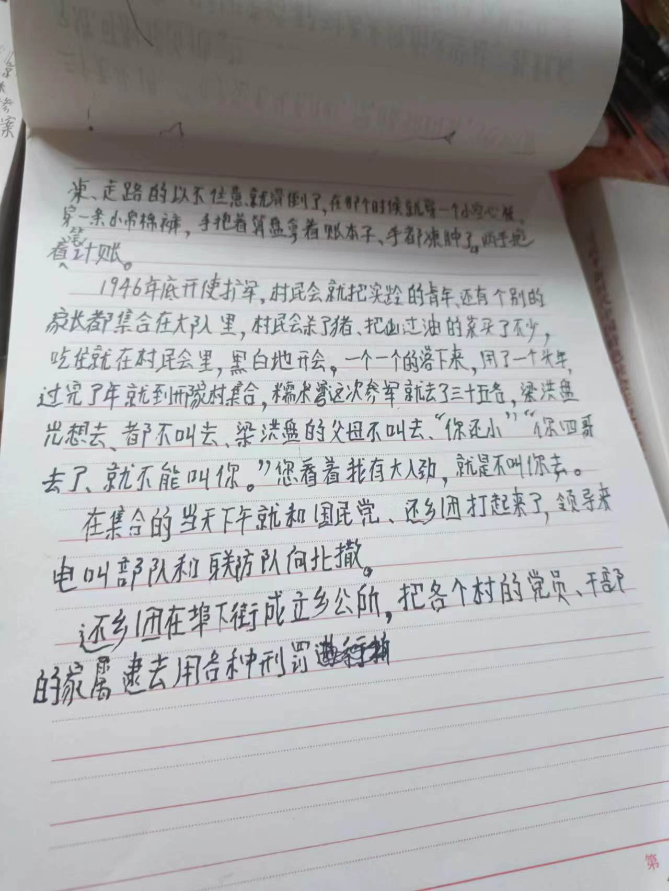

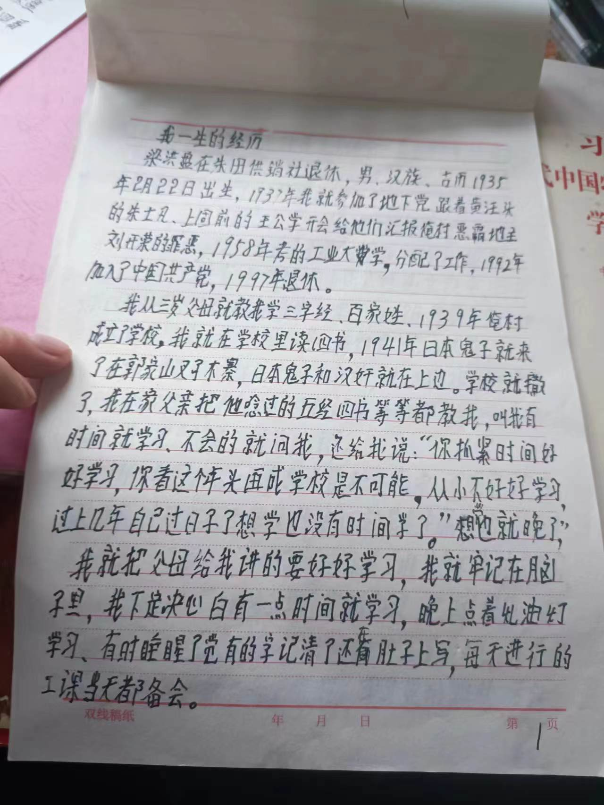


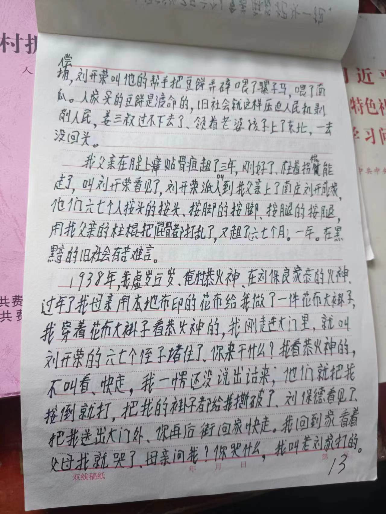


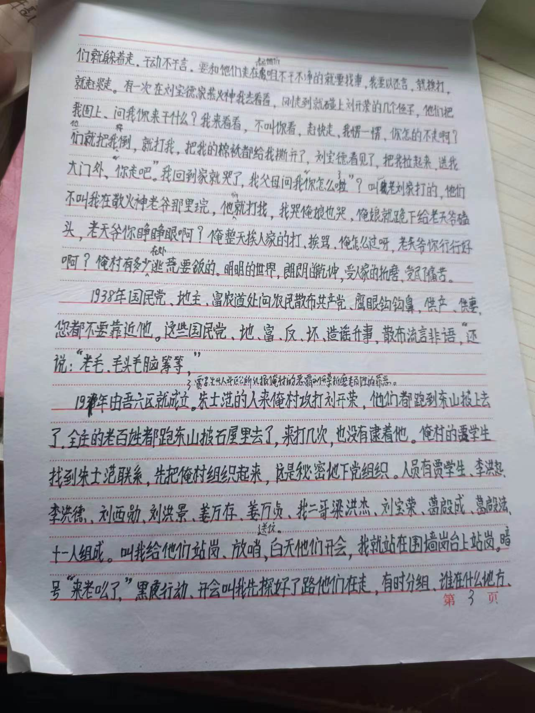

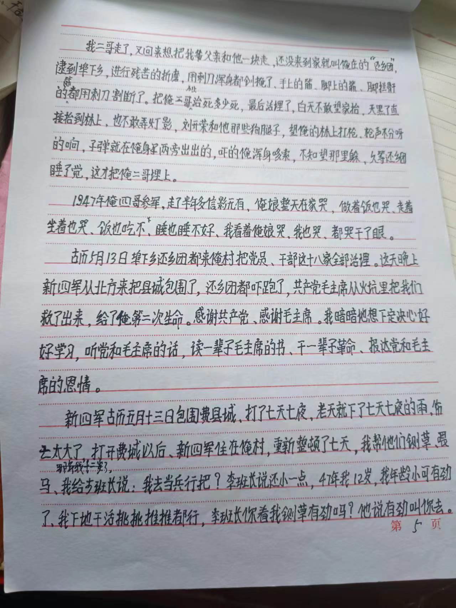

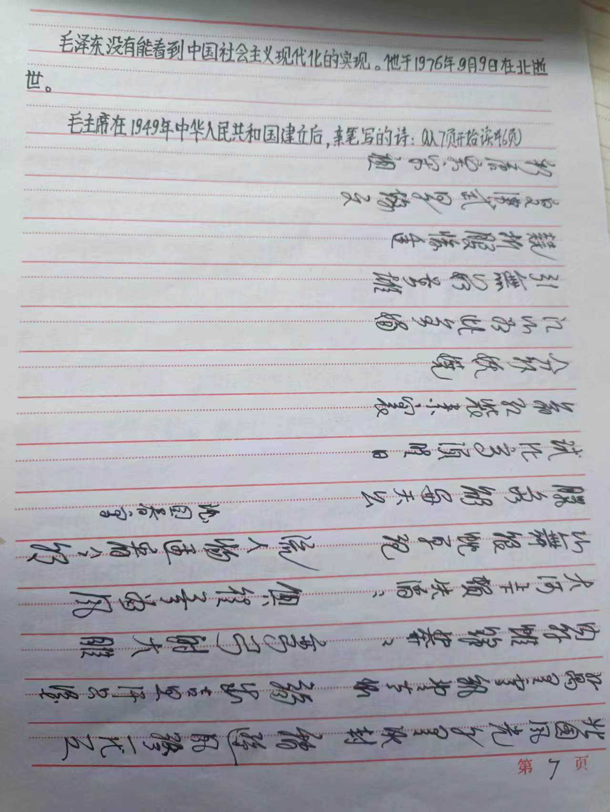


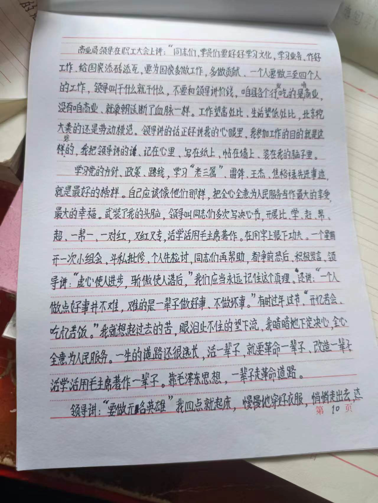
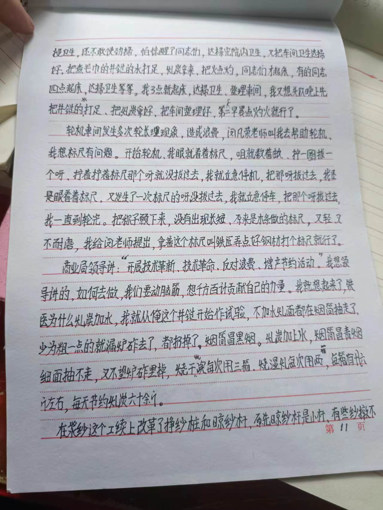


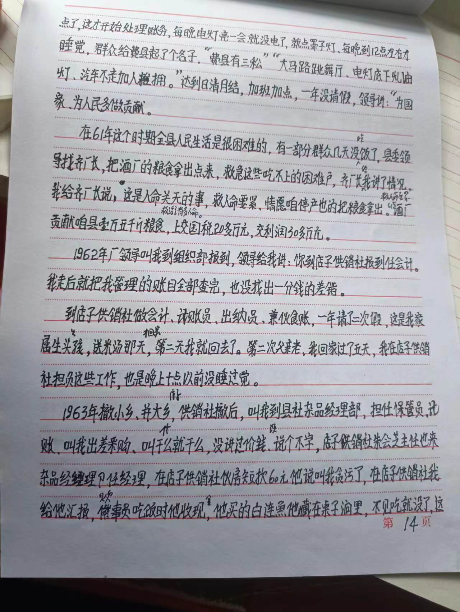
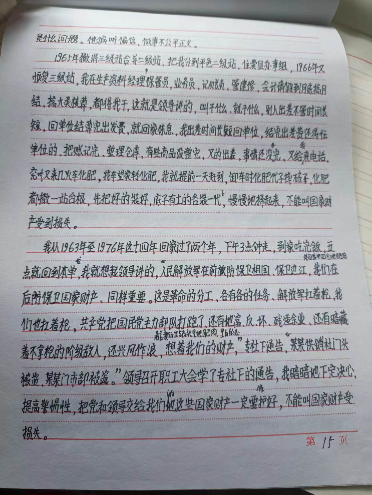
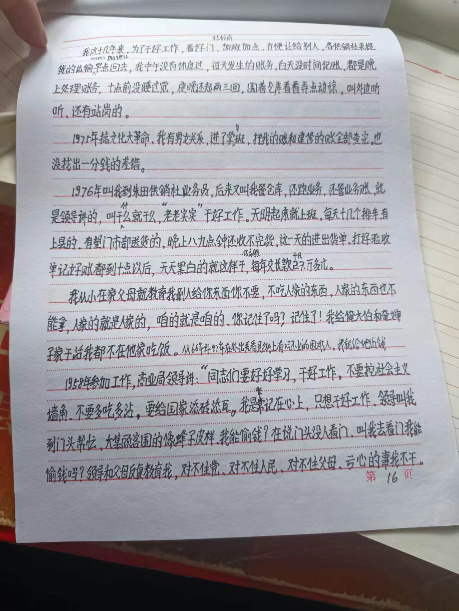


梁洪盘，笔者摄。

11. 附录三：核桃与核桃树
糯米湾的核桃树。核桃落在地上没人捡，落得水泥路上有很多。笔者用鞋踩开，吃了些，皮很薄，很新鲜，也很好吃，比从超市买的要新鲜很多。树上还挂了一些，因为不知道是谁家的财产，故笔者没有摘，只是把地上的都捡捡吃掉了。（阴影中的笔者比较奇特，是因为身着孝服。）